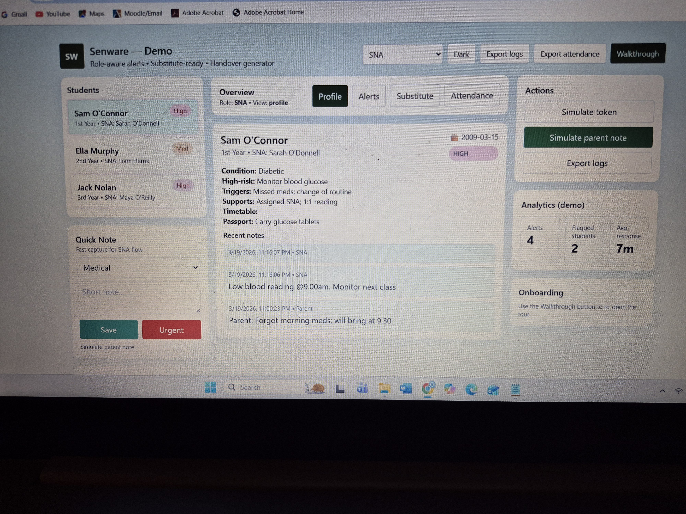

A communication system designed to help school staff coordinate support for students with additional needs.
In many schools, important information about student support needs is shared through informal conversations, WhatsApp groups, or handwritten notes. This can make it difficult for staff to stay aware of important updates during busy school days.
SENware provides a simple digital system where critical alerts and updates are shared with the right staff in real time.
Send important updates such as student absence, medical alerts, behavioural incidents, or support needs to relevant staff instantly.
Quick overview of student information, triggers, supports, and medical notes at a glance.
Allows SNAs to leave notes for colleagues or substitutes, maintaining continuity of care.
Below is an example view from the SENware alert system prototype.

Staff can quickly send alerts, view who receives them, and acknowledge updates in real time.
A short video demonstrating how SENware works.
If your school is interested in participating in the SENware pilot programme, please get in touch.
Email: senwareproject@gmail.com